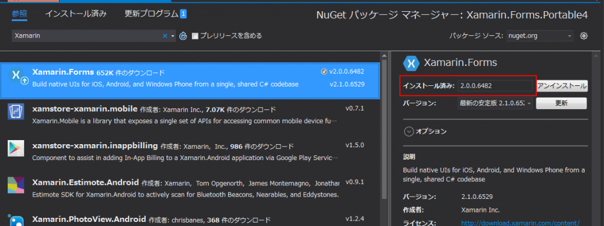

前回はTabbedPageを使ってみました。
Problem
ListView等でデータを表現しようとすると、データの種別に応じて、微妙に表現を変えたりしたいときがあります。 自分としてよくあるのが、パラメータを入力するUIを作る際、設定ファイルなどから読み込んで動的に生成したViewModelに応じて、入力UIを変更する、ということです。 この手の表現はWPFのSystem.Windows.Controls.DataTemplateSelectorやUWPのWindows.UI.Xaml.Controls.DataTemplateSelectorを使います。 では、Xamarin.Formsにあるの？というとどうも2.1で追加されたよう。 詳しくはXamarinの中の人Nish Anil氏のCustomizing ListView Cells with Xamarin.Forms’ DataTemplateSelectorを参考。 が、私の環境で表示されない。 Xamarin.Forms.DataTemplateSelectorというクラスが存在するのは間違いないのに… と、NuGet管理画面を見たら… 
{kind=link}
古い….
今回のサンプルソースは https://github.com/takuya-takeuchi/Demo/tree/master/Xamarin.Forms.Portable4です。
Resolution
まず、NuGetパッケージマネージャーからXamarin.Formsを最新版に更新します。2016/04/26時点で最新版は2.1.0.6526です。 PCLとiOSプロジェクト(必要ならAndroid等も)で更新する必要があります。片方だけだと実行時にエラーが起きてクラッシュします。 これでDataTemplateSelectorが有効になりました。 今回は、TabbedPageの各子要素のPageインスタンスにバインディングされたViewModelをDataTemplateSelectorを使って変化させます。 これによって、TabbedPageのタブをViewModelの状態によって可変にしつつ、ViewModelに応じてタブの内容も変化させることが可能になります。 が、注意しなくてはならないのは、DataTemplateSelectorにDataTypeプロパティが存在しないため、Xamlで生成する際、インテリセンスが効かないため、実行時にバインディングされていないのことに気づかない可能性があります。 また、注意事項として、先のNish Anil氏曰く
When using DataTemplateSelectors, it’s important to keep in mind the following limitations: No more than 20 templates per ListView on Android. The DataTemplateSelector subclass MUST return the same template for the same data if queried multiple times. The DataTemplateSelector must not return another DataTemplateSelector. The DataTemplateSelector must not return new instances of a DataTemplate on each call, instead the same instance must be returned. Failure to do so will effectively disable virtualization and lead to a memory leak.
訳：DataTemplateSelectorsを使うとき、
- Androidでは、1つのListViewにテンプレートは20個まで
- DataTemplateSelectorのサブクラスは、もし複数回要求されるなら、同一のデータに対して同一のテンプレートを必ず返す。
- DataTemplateSelectorは別のDataTemplateSelectorを返してはならない
- DataTemplateSelectorは呼び出しのたびにDataTemplateの新しいインスタンスを返してはならない、代わりに同一のインスタンスを必ず返すこと。そうしないと、効果的な仮想化は無効化されメモリリークを引き起こす
と指摘しています。 まぁ、20個もテンプレートを使うことはないと思いますが、DataTemplateSelectorから別のDataTemplateSelectorを返すな、というのはネストするな、ということでしょうか？ これはたまにやることがあるので注意しなければ。 というわけで実装サンプル。 まずはDataTemplateSelector。 TabbedPageDataTemplateSelector.cs [code lang=”csharp”] using System; using System.Collections.Generic; using System.Linq; using System.Text; using System.Threading.Tasks; using Xamarin.Forms.Portable4.ViewModels;
namespace Xamarin.Forms.Portable4.Controls { public sealed class TabbedPageDataTemplateSelector : DataTemplateSelector {
public TabbedPageDataTemplateSelector() {
}
public DataTemplate TabbedPage1 { get; set; }
public DataTemplate TabbedPage2 { get; set; }
protected override DataTemplate OnSelectTemplate(object item, BindableObject container) { var viewModel = item as TabbedPageViewModel; if (viewModel == null) return null;
return viewModel is TabbedPage1ViewModel ? this.TabbedPage1 : viewModel is TabbedPage2ViewModel ? this.TabbedPage2 : null; } } } [/code] 次は、エントリポイントとなるメインのビューであるMainPageView。 ここで全てのViewを、DataTemplateを使って定義しています。 ItemsSourceとItemTemplateはおなじみ、という感じですね。 MainPageView.xaml [code lang=”xaml”]
<TabbedPage.BindingContext> <viewModels:MainPageViewModel /> </TabbedPage.BindingContext>
<TabbedPage.ItemTemplate> controls:TabbedPageDataTemplateSelector controls:TabbedPageDataTemplateSelector.TabbedPage1
namespace Xamarin.Forms.Portable4.ViewModels { public sealed class MainPageViewModel : BindableBase { public MainPageViewModel() { var tabbedPageViewModels = new TabbedPageViewModel[] { new TabbedPage1ViewModel(), new TabbedPage2ViewModel(), };
this.TabbedPages = new ObservableCollection(tabbedPageViewModels); }
private ObservableCollection _TabbedPages;
public ObservableCollection TabbedPages { get { return this._TabbedPages; } protected set { this.SetProperty(ref this._TabbedPages, value); } }
}
} [/code] 最後にタブのViewModelです。 TabbedPageViewModelを派生して、派生クラス毎にTitleプロパティを変更しています。 タブが複数ある場合は、往々にして、個々のタブは似た構成になることが多いので、抽象クラスで共通な振る舞いを定義するのはよくあると思います。 TabbedPageViewModel.cs [code lang=”csharp”] using Microsoft.Practices.Prism.Mvvm;
namespace Xamarin.Forms.Portable4.ViewModels { public abstract class TabbedPageViewModel : BindableBase {
private string _Title;
public string Title { get { return this._Title; } protected set { this.SetProperty(ref this._Title, value); } }
}
public sealed class TabbedPage1ViewModel : TabbedPageViewModel {
public TabbedPage1ViewModel() { this.Title = “TabbedPage1”; }
} public sealed class TabbedPage2ViewModel : TabbedPageViewModel { public TabbedPage2ViewModel() { this.Title = “TabbedPage2”; }
}
} [/code] 実行すると下記のようになります。 
タブ1

タブ2
DataTemplateがあるかないかでは、表現の幅に大きな違いが出るので、非常にうれしい実装です。
Conclusion
DataTypeがなかったり、少し制限がありますが、DataTemplateSelectorが遜色ない機能を持っていることがわかりました。
Source Code
https://github.com/takuya-takeuchi/Demo/tree/master/Xamarin.Forms.Portable4